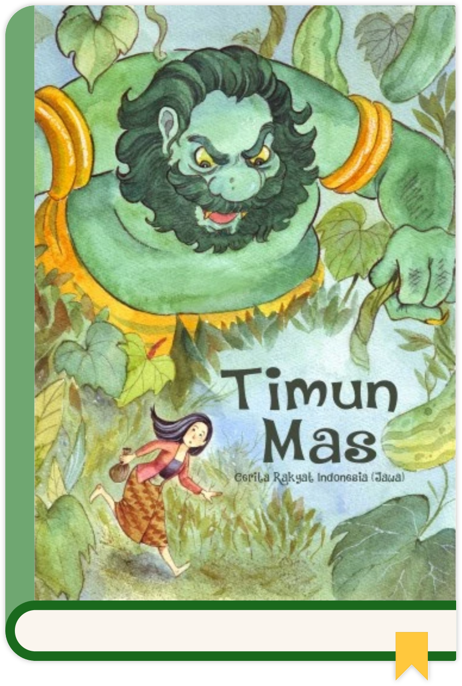

Mbok Srini mendapat bayi cantik dari dalam buah mentimun emas pemberian raksasa. Namun, saat dewasa, ia harus lari menyelamatkan diri dari kejaran sang raksasa. Berbekal 4 bungkusan ajaib yang bisa mengubah hutan menjadi lautan dan lumpur, dimulailah aksi kejar-kejaran paling seru demi memenangkan kebebasannya!